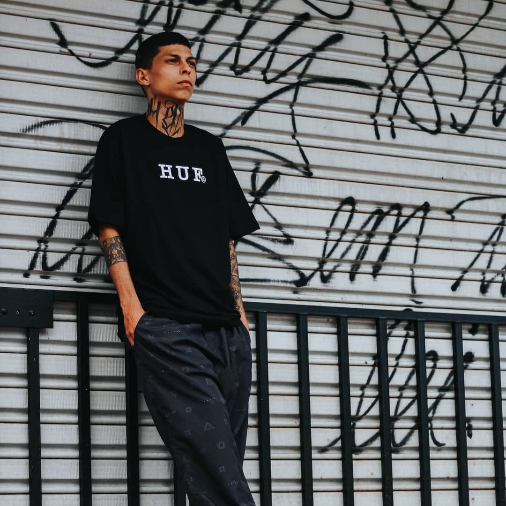

Uma ideia simples.
Um direito imenso.
O Ensino Livre nasce da convicção de que o conhecimento deve abrir portas, ampliar vozes e ajudar a questionar as desigualdades.
Aprender para
compreender e agir.
Este site é um espaço educativo de reflexão sobre a qualidade do ensino, a exclusão social e o papel da educação no desenvolvimento do Brasil. A proposta é organizar ideias e incentivar o pensamento crítico, sem tratar questões complexas como se tivessem respostas fáceis.
Acreditamos que educação e resistência caminham juntas quando aprender significa reconhecer direitos, dar nome às injustiças e imaginar outras formas de viver em sociedade.

Que ninguém precise abrir mão de aprender.
Uma educação justa não promete caminhos iguais para todos; trabalha para que ninguém seja impedido de caminhar.

Pedro Henrique Corrêa .
Sou estudante autodidata, movido pela curiosidade e pela vontade de compreender o mundo. Tenho interesse por tecnologia, programação, filosofia e questões sociais. Acredito na educação como ferramenta de autonomia, pensamento crítico e transformação — e que o conhecimento deve ser compartilhado, não tratado como privilégio.